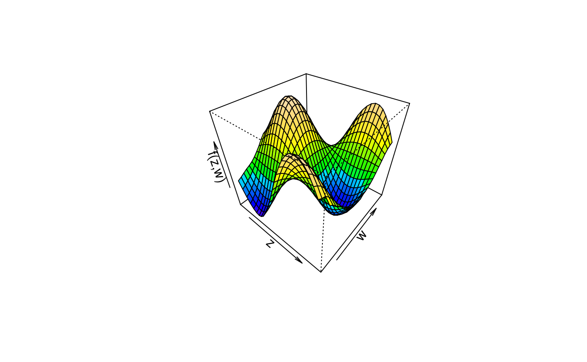

Plot 3D Effects
plot3d.RdFunction to plot 3D graphics or image and/or contour plots for bivariate effects/functions.
plot3d(x, residuals = FALSE, col.surface = NULL, ncol = 99L, swap = FALSE, col.residuals = NULL, col.contour = NULL, c.select = NULL, grid = 30L, image = FALSE, contour = FALSE, legend = TRUE, cex.legend = 1, breaks = NULL, range = NULL, digits = 2L, d.persp = 1L, r.persp = sqrt(3), outscale = 0, data = NULL, sep = "", shift = NULL, trans = NULL, type = "mba", linear = FALSE, extrap = FALSE, k = 40, ...)
Arguments
| x | A matrix or data frame, containing the covariates for which the effect should be plotted
in the first and second column and at least a third column containing the effect. Another
possibility is to specify the plot via a |
|---|---|
| residuals | If set to |
| col.surface | The color of the surface, may also be a function, e.g.
|
| ncol | the number of different colors that should be generated, if |
| swap | If set to |
| col.residuals | The color of the partial residuals, or if |
| col.contour | The color of the contour lines. |
| c.select | Integer vector of maximum length of columns of |
| grid | The grid size of the surface(s). |
| image | If set to |
| contour | If set to |
| legend | If |
| cex.legend | The expansion factor for the legend text, see |
| breaks | A set of breakpoints for the colors: must give one more breakpoint than
|
| range | Specifies a certain range values should be plotted for. |
| digits | Specifies the legend decimal places. |
| d.persp | See argument |
| r.persp | See argument |
| outscale | Scales the outer ranges of |
| data | If |
| sep | The field separator character when |
| shift | Numeric constant to be added to the smooth before plotting. |
| trans | Function to be applied to the smooth before plotting, e.g., to transform the plot to the response scale. |
| type | Character, which type of interpolation method should be used. The default is
|
| linear | Logical, should linear interpolation be used withing function
|
| extrap | Logical, should interpolations be computed outside the observation area (i.e., extrapolated)? |
| k | Integer, the number of basis functions to be used to compute the interpolated surface
when |
| … | Parameters passed to |
Details
For 3D plots the following graphical parameters may be specified additionally:
cex: Specify the size of partial residuals,col: It is possible to specify the color for the surfaces ifse > 0, then e.g.col = c("green", "black", "red"),pch: The plotting character of the partial residuals,…: Other graphical parameters passed functionspersp,image.plotandcontour.
Note
Function plot3d can use the akima package to construct smooth interpolated
surfaces, therefore, package akima needs to be installed. The akima package has an ACM
license that restricts applications to non-commercial usage, see
http://www.acm.org/publications/policies/softwarecrnotice
Function plot3d prints a note referring to the ACM license. This note can be suppressed by
setting
See also
Examples
## Generate some data. set.seed(111) n <- 500 ## Regressors. d <- data.frame(z = runif(n, -3, 3), w = runif(n, 0, 6)) ## Response. d$y <- with(d, 1.5 + cos(z) * sin(w) + rnorm(n, sd = 0.6))# NOT RUN { ## Estimate model. b <- bamlss(y ~ s(z,w), data = d) summary(b) ## Plot estimated effect. plot(b, model = "mu", term = "s(z,w)") ## Extract fitted values. f <- fitted(b, model = "mu", term = "s(z,w)", intercept = FALSE) f <- cbind(d[, c("z", "w")], f) ## Now use plot3d(). plot3d(f) plot3d(f, swap = TRUE) plot3d(f, grid = 100, border = NA) ## Only works if columns are named with ## '2.5<!-- %' and '97.5%'. --> plot3d(f, c.select = 95, border = c("red", NA, "green"), col.surface = c(1, NA, 1), resid = TRUE, cex.resid = 0.2) ## Now some image and contour. # plot3d(f, image = TRUE, legend = FALSE) # plot3d(f, image = TRUE, legend = TRUE) # plot3d(f, image = TRUE, contour = TRUE) # plot3d(f, image = TRUE, contour = TRUE, swap = TRUE) # plot3d(f, image = TRUE, contour = TRUE, col.contour = "white") # plot3d(f, contour = TRUE) # plot3d(f, image = TRUE, contour = TRUE, c.select = 3) # plot3d(f, image = TRUE, contour = TRUE, c.select = "Mean") # plot3d(f, image = TRUE, contour = TRUE, c.select = "97.5<!-- %") --> # }plot3d(sin(z) * cos(w) ~ z + w, col.surface = rainbow_hcl(n = 99, c = 300, l = 80, start = 0, end = 100), data = d)# plot3d(sin(z) * cos(w) ~ z + w, # col.surface = rainbow_hcl(n = 99, c = 300, l = 80, start = 0, end = 100), # image = TRUE, grid = 200, data = d)